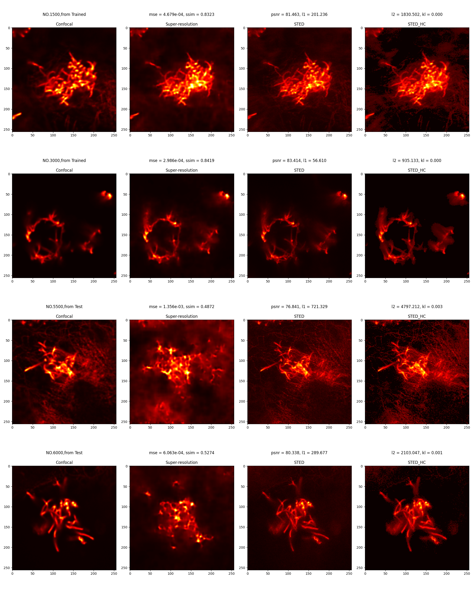
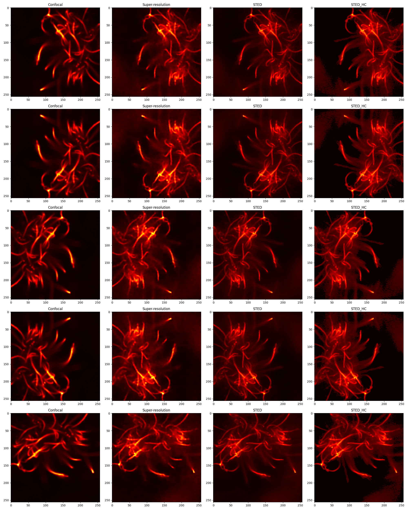

VAE
网络结构
输入： 256 * 256 * 1
- Encoder： 3个卷积层+3个relu激活函数 -> 全连接层输出mu,logvar
- Decoder: 1个全连接层+3个反卷积层+2个relu函数 -> sigmoid保证输出在(0,1)
- VAE: 结合E和D，加入随机噪声进入平均. 在Forward中：首先将输入图像编码为潜在空间分布参数（均值和对数方差），然后使用重新参数化技巧从该分布中提取样本，最后将该样本解码回原始图像空间。
输出: 重建的图像，以及潜在空间分布的平均值和对数方差。
改进方向
从复杂度
方向1 单独增加更多的卷积层
- 实验2_1 ：卷积层增加为4层
实验结果：

修改1500为500后结果： 
- 实验2_2 ：卷积层增加为5层
- 实验2_3 ：卷积层增加为6层
从过拟合
从神经网络多样性
引入残差块